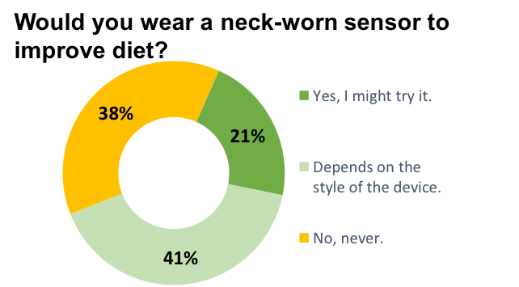

Positive correlation between caloric intake and eating behaviors
Why: To understand what features characterize problematic behaviors and what are the antecedents to and proximal determinants of problematic behaviors (like overeating).
How: Use surveys, focus groups, interviews and human-centered design methods to help us learn how to optimize passive sensing systems.
Example: A recent study of ours showed that feeding gestures, eating duration, and number of swallows positively correlate with caloric intake. We also designed systems to detect them using wearables people will actually wear. Our survey of 93 people revealed that 88% said they would wear our wrist-worn sensor, and 62% said they would wear a personalized version of our neck-worn sensor.
62% of those surveyed say they would wear the device if personalized.